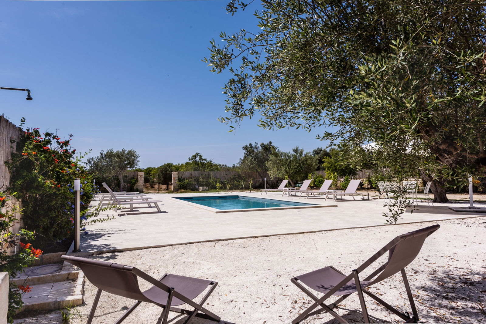

€850.000
Pachino (near Marzamemi) · Sicily · Italy
Sicilian farmhouse near Marzamemi that mixes old and new the right way — Modica/Sabucina stone, beams and terracotta with modern lines, centuries-old olives and a private pool on 9,000 m² — strong SE Sicily character under €1.2M.
Opened 16 Sep 2026 on Engel & Völkers Siracusa; asking €850.000; 250 m² / 3 bed / 3 bath / land 9,000 m²; constructionYear 2013; condition.top; ACTIVE. Pool verified from title + gallery (not in prose).
Open the listing